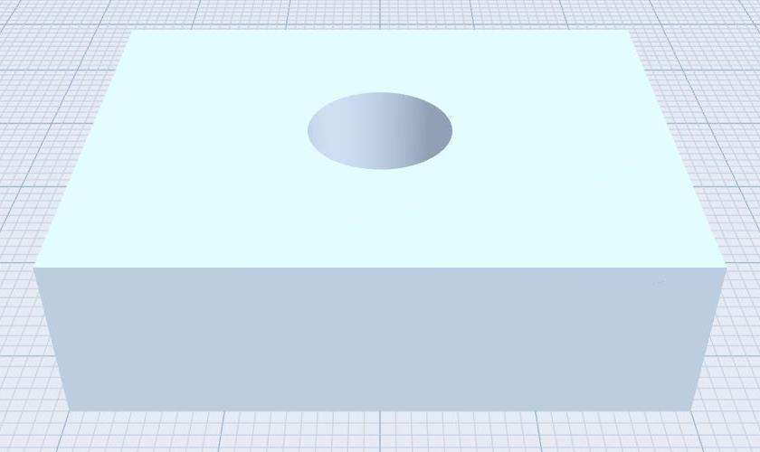

Free CAD for 3D Printing
Make a dimensioned part, inspect it, and export a fabrication file. This worked example builds a mounting block with a vertical through-hole using primitives and a subtractive boolean.
At a glance
- Workflow
- Create a dimensioned part, save its editable JSON project, then export STL or 3MF for your slicer.
- Example
- 40 × 12 × 30 mm mounting block with a 10 mm through-hole.
- Requirements
- Browser edition uses WebGL 2 and WebAssembly. Windows x64 Setup and Portable include MEDUSA.
- Licence
- Free for personal, educational, professional and commercial use under AGPLv3. Your original models remain yours; software distribution and modified network versions have source-sharing obligations.
Build a mounting block with a through-hole
Use millimetres. The target block is 40 × 12 × 30 mm along X/Y/Z, with a 10 mm diameter vertical hole. In NASSCAD, this placement uses the bottom of the unrotated primitive as its Y reference.
- Create a Cube. Rename it Mounting_block. Set Dim X = 40, Y = 12, Z = 30. Set Pos X, Y and Z to 0, and keep its role Solid.
- Create a Cylinder. Set Dim X = 10, Y = 30, Z = 10. Set Pos X/Z to 0 and Pos Y = −5. This cutter extends beyond both end faces of the block.
- Set the cylinder role to Hole. Select only the block and cylinder, then choose Subtract.
- Wait for the result. Inspect it from Top and an oblique view. Check its dimensions before rotating the object.
- Save the editable JSON project with Save project as. Keep this checkpoint before applying optional fillets or chamfers.
This construction was checked using the browser Manifold engine without MEDUSA. If the hole is missing, inspect overlap, the Hole role and the selected operands. If the whole block disappears, check the cutter size and unintended selected objects.

Export STL or 3MF
Open Export and choose the file format accepted by your slicer. Check the export scope: deliver the intended result, rather than an unrelated object or the whole scene accidentally. STL is a triangle mesh; its file does not establish a universally enforced unit convention, so confirm millimetres in the receiving slicer. NASSCAD also offers 3MF export.
Use the Performances menu to select appropriate mesh resolution. More segments can improve circular surfaces but increase file size and memory use. Inspect the exported geometry rather than assuming that a higher setting always gives a better part.
Check the file in your slicer
- Import the exported file into your usual slicer.
- Confirm a bounding size of 40 × 12 × 30 mm for this unrotated block.
- Check the hole, orientation, layer preview and any mesh warnings.
- Choose material, supports, clearance and printer settings for the actual part.
- For a fit-critical hole, print a small test piece before committing to a long print.
Keep design and manufacturing files separate
The JSON project preserves editable scene information. An exported mesh is a delivery file for another tool. Keep both, and preserve the source project when adjusting tolerances. Printer calibration, material shrinkage and mesh approximation can affect the manufactured dimensions; the tutorial does not guarantee every printer or process.
Read the complete worked example and the mesh export and fabrication guide.
Browser CAD for 3D printing: common questions
Can I design a part without signing up?
Yes. Launch NASSCAD in a compatible browser, create solids and subtract Hole objects to form openings. Model processing runs locally. Save the editable project and export the finished part for your slicer.
Can I continue designing offline?
The offline Windows CAD edition includes MEDUSA and the required runtime files. For the browser offline edition, keep the complete application package together; the HTML file alone is not sufficient.
Can I inspect a supplied STEP part before modelling?
Use the STEP file viewer to inspect supported mechanical models. Keep the original file: importing geometry does not recreate the source application's editable feature history.